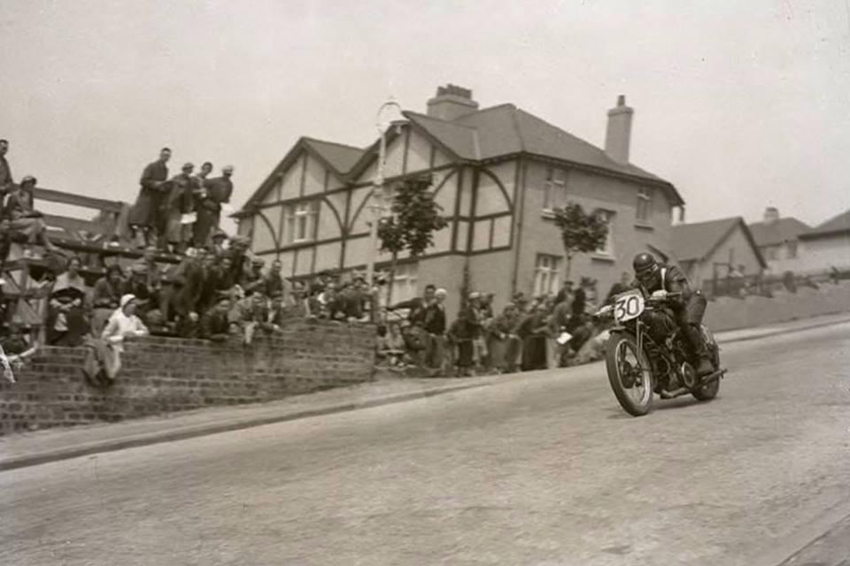
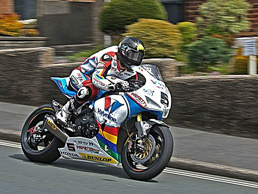
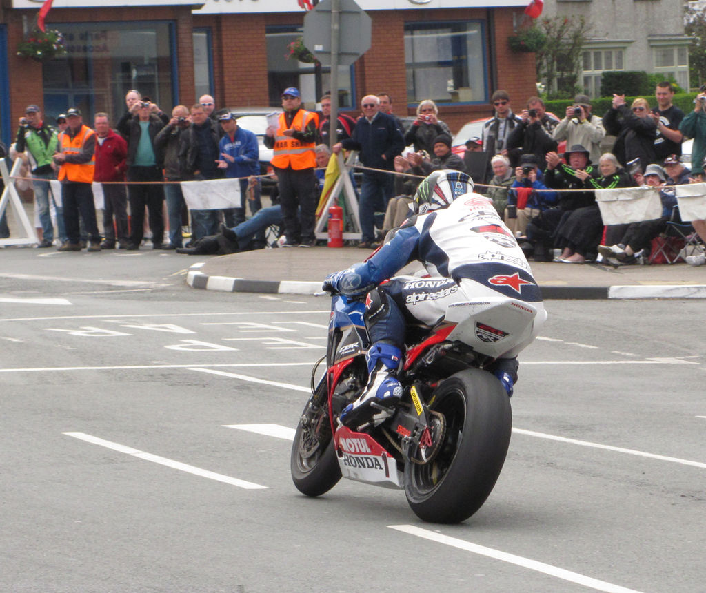
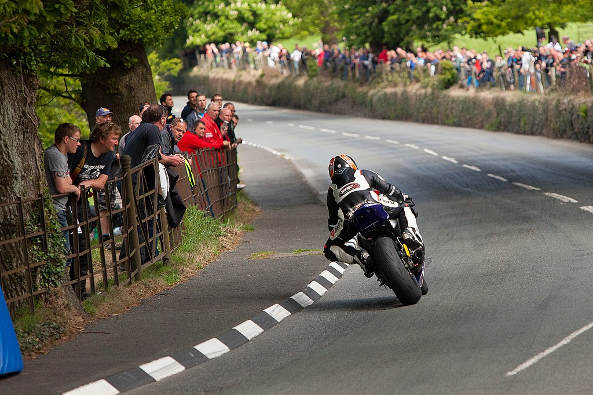

Circuit analyse
Het circuit dat zich op dit eiland bevind is zowal uniek als extreem gevaarlijk. Het circuit bestaat volledig uit landwegen die enkel worden afgesloten tijdens de vrije training en races. Eén rondje van het circuit bedraagt 60km met serieuze hoogteintervallen en smalle wegen. Typisch duurt het een drie-tal jaar voordat rijders klaar zijn om een race of training mee te doen. Elke coureur die meedoet kent dit circuit van buiten! Meer dan 200 bochten moeten onderhandeld worden per ronde tijdens en intensieve tijdrit die tot zes rondes kan duren.
Het circuit wordt voornamelijk gebruikt in de twee weken dat de moto’s erop rondrijden, er zijn ook andere evenementen, maar die worden hier niet besproken. De startlijn vindt zich plaats op de Glencrutchery Road in de stad Douglas. Het parcours bedraagt 60,721 km per ronde vanaf de startlijn. Het parcour gaat door verschillende dorpen en ook een berg gedeelte dat men “the mountain road” noemt vooraleer dat de rijders terug over de startlijn in Douglas rijden.
Circuit veranderingen
- Veranderingen 1920-1999
- grootschalig project werd In 1922 doorgevoerd door de Highway Board om het wegdek dramatisch te verbeteren. Hiervoor waren veel van de wegen nog op aarde en stenen, maar na de populariteitstoename van het evenement werd er beslist dat een wegdek overal noodzakelijk was. Op vele plaatsen werd de baan ook breder gemaakt om veiligheid te verbeteren en inhaalmanoevers mogelijk te maken. Over de jaren heen waren er veel veranderingen en in 1938 werd te afstand gemeten op 60,72km, wat de huidige lengte van het parcours bedraagt.
- 
- Unknown authorUnknown author, CC BY-SA 4.0
- Veranderingen 2000-huidige tijd
- In de afgelopen twintig tal jaar zijn er allerlei aanpassingen gebeurt, niet aan de layout van het circuit, maar wel veranderingen aan specifieke bochten en andere aspecten van het parcour met als doel om de veiligheid te verhogen. Helaas lijken deze aanpassingen niet veel verschil te maken, aangezien de dodelijkheid van het evenement nog niet is afgenomen. Naarmate dat de moto's sneller zijn geworden, is het zelfs dodelijker geworden.
- 
- Dave Johnson, CC BY-SA 4.0
Benoemde Bochten
Het circuit bevat meer dan 200 bochten, waarvan een 60-tal een naam hebben. Sommige van deze namen zijn afkomstig van coureurs andere namen van de plekken waar de bochten zich bijvoorbeeld bevinden. De allereerste participant die een bocht naar zich vernoemd kreeg was Sir Edges die de bocht ‘Edges Corner’ benoemde. De meeste bochten worden helaas vernoemd naar rijders wiens leven is geïndigd in deze bocht. Naarmate dat de moto’s sneller zijn geworden, waren er niet genoeg bochten op het circuit om iedere overleden persoon te eren. Hierdoor werden deze benamingen prestigieuzer en enkel gegeven aan speciale rijders en of speciale scenario’s. In 2013 heeft de overheid echter de beslissing genomen om ook bochten te vernoemen naar actieve coureurs zoals John McGuinness, die 23 TT overwinningen heeft behaald. Ook worden er soms bochten vernoemd naar niet-coureurs die een toewijding aan de TT demonstreren.

Agljones at English Wikipedia, CC BY-SA 3.0
Veiligheid
Tussen 1911 en 2022 zijn er 265 rijders omgekomen tijdens officiële training en races op het eiland van Man. Pas vanaf het jaar 1927 na een tragisch fataal ongeval werd er beslist om trainingen te organiseren op gesloten wegen zoals de races. Na fatale ongevallen in 1935 vanwege slechte zichtbaarheid werden er ook vlaggen geïmplementeerd om sessies af te vlaggen als er ergens op het circuit slechte zichtbaarheid was. Ook trainingen ’s avonds werden geïmplementeerd die vandaag de dag nog steeds gebruikt worden. Verder werden er steeds meer aanpassingen gemaakt aan gevaarlijke bochten en werden ook sommige oude huizen en restaurants afgebroken om de veiligheid te verbeteren.
1970 was het dodelijkste jaar van de sport, waar in de twee weken zes rijders om het leven kwamen, waaronder kampioenschap favoriet Santiago Herrero. Na een tragisch accident in 1972 werd ook beslist dat als de medische helikopter door weersomstandigheden niet kon opstijgen of landen, dat de races of training zou uitgesteld worden. Door de jaren heen werden na tragische gebeurtenissen lessen geleerd en regels aangepast om de veiligheid te verbeteren. Helaas zal er wellicht nooit een manier zijn om deze races veilig te organiseren. Als je valt op een moto aan 280km/h helpt een helm of een barrière van stro niet veel.

Phil Long from Manchester, United Kingdom, CC BY 2.0